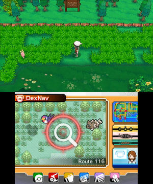
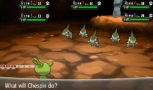

Unlike ever before, there was a differnce in shiny hunting methods between the mainline game and the side game of the generation.
In ORAS (Omega Ruby/Alpha Sapphire) had the mainstay, Masuda Method. Along with this, Horde encounters and Chain Fishing made their way over from X and Y. The big feature that was added to these games was "DexNav". This was in some ways, a tweaked version of the pokeradar, with a more user friendly design. Randomly, a tile of shaking grass will appear, and you would then sneak over to it by lightly pressing the analog stick until you enter the tile. Chaining encounters is less previlant in this method, as you only really need to chain get chains of 5 for a fair boost to the shiny odds. beyond that, the pokemon that you encounter will be steonger, and can have hidden abilites and egg moves.
Pokemon X and Y had quite the plethora of different shiny hunting methods, making a shiny hunter's paridise. They added the horde encounter, chain fishing, and the friend safari, this is the most methods that they have ever added to a game! Along with this, the PokeRadar made a return from Generation 4! Horde encounters and the friend safari are pretty simple, you use sweet scent in the grass, and if that route has a horde encounter table, you are guranteed to encounter a horde of pokemon. The friend safari is a post-game exclusive area, which gives you a boosted chance of encountering shiny pokemon. This area was used as a gimmic of sortes to promote the friend system on the 3ds, adding different friends to your 3ds would give you another slot in the friend safari. This would give you another type of poekon that you could encounter, with each slot letting you encounter anywhere from 2-4 differnt pokemon of that type. Chain fishing is a bit more of a pain to do, as there are many different failure conditions. First of all, you must find a spot to fish, and not move from that spot, if you move, it will break the chain. Next, you MUST get an encounter every time you fish, if you dont get a nibble, the chain will break. So its best to use a pokemon with the suction cups ability. Lastly, if you reel in the rod too early, the chain will break. Essentially, all you need to do is successfully fish in the same spot until a shiny appears.
